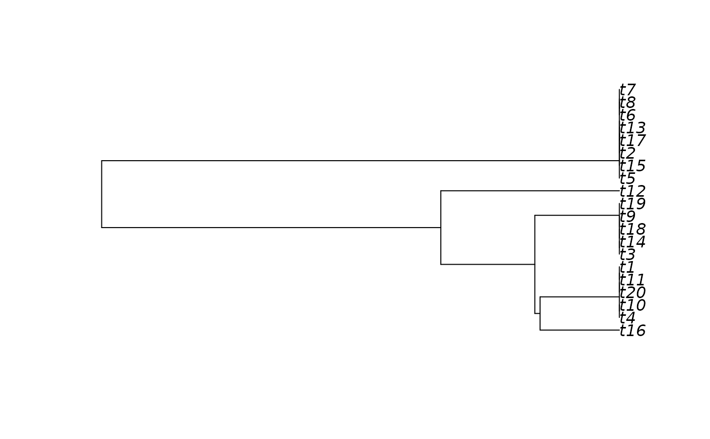

This function slices a phylogenetic tree into multiple slices, spaced equally either in million years or intervals of phylogenetic diversity (PD).
Arguments
- tree
phylo. An ultrametric phylogenetic tree in the "phylo" format.
- n
numeric. A numeric value indicating either the number of temporal slices (method = 1) or the time interval in million years (or phylogenetic diversity) among the tree slices (method = 2). Default is 1.
- criteria
character string. The method for slicing the tree. It can be either "my" (million years) or "PD" (accumulated phylogenetic diversity). Default is "my".
- method
numerical. A numerical value indicating the method to make the multiple slices. Setting "method = 1" will slice the phylogeny based on an "n" number of slices. If method = 2, the slices will be created based on a temporal interval. Default is 1.
- timeSteps
logical. A logical value indicating whether the vector containing the time-steps used for creating the multiple slices should be returned. If "timeSteps = TRUE", then it returns a list containing both the time vector and a list with the multiple tree slices. Default is FALSE.
- dropNodes
logical. A logical value indicating whether the nodes that were sliced (void nodes, presenting no branch length) should be preserved in the node matrix. Default is FALSE.
- returnTree
logical. A logical value indicating whether the original input tree should be returned with its slices in a list. Default is FALSE.
Value
The function returns a list containing multiple slices of a phylogenetic tree. The slices list is ordered from roots to tips. Thus, the first object within the outputted list is the root-slice, whereas the last is the tips-slice.
See also
Other slicing methods: squeeze_root(), squeeze_tips(), squeeze_int(), prune_tips()
Author
Matheus Lima de Araujo matheusaraujolima@live.com
Examples
# Generate a random tree
tree <- ape::rcoal(20)
# Cuts a phylogeny into multiple temporal slices
tree <- phylo_pieces(tree, n = 3, criteria = "my", method = 1)
#> > The 3 number of pieces inputted equals to intervals of 0.760062152057892 million of years.
# Plotting the three slices of our phylogeny
plot(tree[[1]])
plot(tree[[2]])

plot(tree[[3]])